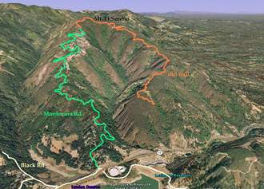

Week 5: Montevina
31 Oct 2009
|
2009 Low-Key Hillclimbs Week 5: Montevina 31 Oct 2009 |
|  |
| Aerial photo of Montevina, courtesy of Stanford Cycling |
The threat of rain held us off last year when Montevina was on the schedule. But Low-Key isn't intimidated. We return...
Rising up the opposing slope of the mountain from Bohlman is quiet Montevina Road, another Low-Key first. Sure, compared to Bohlman, perhaps you have nothing to fear from Montevina. But few roads compare to Bohlman, and by any rational standard, this one is tough. With an average grade exceeding 9% (and you know this means sections will be well above this number), Montevina will test your will as it winds up the ridge above Lexington Reservoir. And the finish is not to be easily forgotten.
Those seeking further adventure can continue on from the climb finish via the dirt fire road to the top of Bohlman. Then, if you're feeling frisky, descend Bohlman (careful!) to 6th Street, left to Highway 9, left there for the long climb to Skyline, left over Castle Rock and down to Black Road which will take you back to the Highway 17 frontage road. A left there and it's a short ride back to the base of Montevina.
But for most, Montevina will take everything we have to offer.
Our insurance demands it: helmets are required. Sorry kids, no exceptions!
USA Cycling rules do not allow ear plugs. We don't think it's a good idea either. So for safety sake, please leave both ears open during all Low-Key events!
Trailers pulling boom boxes are fine, however.
| We'll meet at the base of Black Road, at the Highway 17 frontage road. |
We recommend suggesting parking along Alma Bridge Rd. with a warm-up ride around the reservoir. There are parking lots at the dam and at Miller Point picnic area. There may be parking at the Lexington School on Old Santa Cruz Hwy. There is limited parking at Black and Montevina and at the Bear Creek overcrossing at CA17 (on the reservoir side). Support crew driving up Montevina in autos should be aware that the top of the road before the gate is less friendly than the top of Bohlman. It gets steeper up to the gate. There is only a small turnout/parking area off the road that might be muddy if it's wet. Don't forget to use the parking brake!
Eric Murray says:
There's room for about 5 cars at the bottom of Black rd.
When you get off 17 and stop at the stop sign, turn right over the overpass, and then right again. There's a dirt area right there that people park in, but I often see them getting tickets so I would not suggest parking there. If you continue on about 1/4 mile there is a large dirt parking area on the left. I have never seen cars there getting ticketed.
Eric suggests:
You can take the los gatos creek trail bike path to lexington dam.
They recently paved the part across the dam but I beleive that there is still a dirt/gravel section. I haven't been on it in a while. I know people who have ridden it on race bikes without walking so it can't be too bad.
Once you are on the dam, you can go left and take the long way around the reservoir (take a right on Aldercroft Heights and a right on old santa cruz) or you can go towards 17. At 17 you can either ride a singletrack trail or walk against traffic on the shoulder to get to the Bear Creek overpass. If you ride on the shoulder there's a grate that forces a rider into the traffic lane, and where the onramp curves onto the merging lane cars tend to cut the corner which doesn't leave much room for a cyclist, so please walk.
Once you're at Bear Creek, cross the bridge and take a right onto the frontage road where registration and the start will be.
It takes me about 30 minutes to ride around the reservoir at a moderate pace. (i.e. when warming up to climb Montevina) If you have time that's what I would suggest. There's even porta-potties along the way.
Another way is to ride up 9, then south on 35 to Black, and down Black. Black is steep and twisty and there's a lot of road debris, especially after the winds we have been having, so be careful if you do this.
The other way is to go up Bolhman/On Orbit, then ride through the open space (on dirt, it's about 1 mile) to the top of Montevina, and come down that way.
Riding around the lake is a good warmup. The best way is to ride down the highway 17N on ramp and ride the shoulder for about 1/2 mile until you get to Alma Bridge Rd. There is one storm grate near the offramp that you have to ride into the traffic lane to get around, otherwise the shoulder is ok. At the other side of the lake turn right across Alma Bridge and up the hill to Old Santa Cruz rd, where another right takes you back to the highway 17 overpass.
The loop around the lake is rolling hills, about 8 miles and 800 feet of climbing. It takes me about 30 minutes.
The bottom of Montevina is narrow and twisty. The locals tend to drive fast and use all of the road. I ride all the way to the right. There won't be people rushing to work or to take their kids to school on Saturday so it should be much better than during the week.
There's a loose dog near the bottom (small group of houses about 1/4 mile up) that likes to chase cyclists.
Later, clarifying:You can either
| stats | 3.55 miles, 1660 feet, 8.9% |
| format | mass start |
| time | reg 9:15 - 10:00 start 10:10am |
| coordinator | |
| aerial view | Stanford Cycling |
| route profile | Motionbased profile |
| weather | Weather Underground Weather Bonk |
| registration form |
PDF release form |
| entry fee | $10 voluntary donation free for juniors 2 free for volunteers free for coordinators |

{kind=link}
{kind=link}